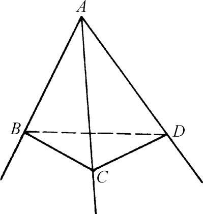
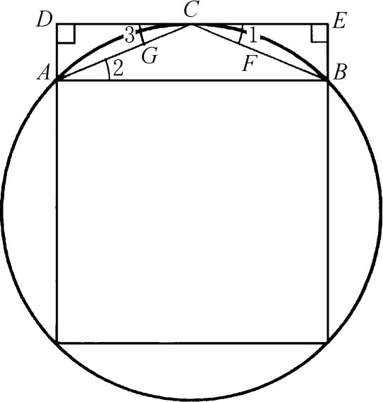
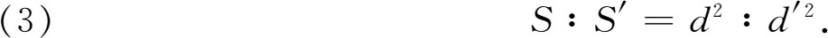
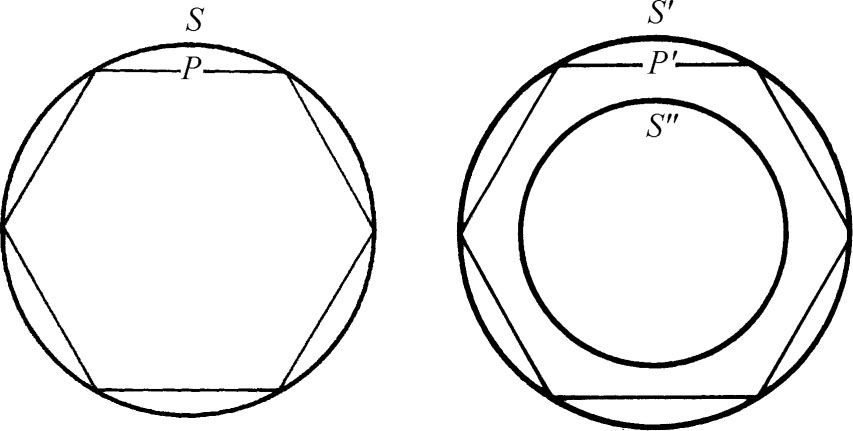
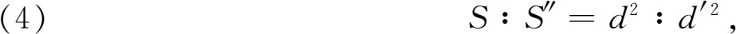
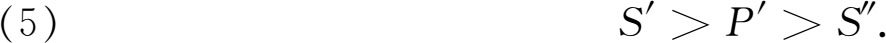
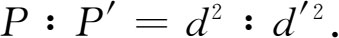
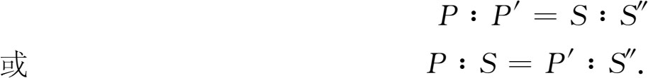
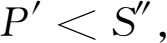

9．第十一、十二、十三篇：立体几何及穷竭法
第十一篇开始讲立体几何，但仍有一些平面几何的重要定理。这一篇开始是定义。
定义1．立体是有长、宽、高的（那种东西）。
定义2．立体的边界之一是一个面。
定义3．若一直线垂直于一平面上所有与其相交的直线，则直线与平面相垂直。
定义4．两平面相交，若在其中一平面内向交线所作的垂线垂直于另一平面，则两平面垂直。
定义6．平面与平面的夹角是每一平面内过公共交线上一点的垂线所夹的锐角。
我们称这锐角为两面角的平面角。
此外还定义了平行平面、相似立体形、立体角、棱锥、棱柱、球、圆锥、圆柱、立方体、正八面体、正十二面体及其他立体形。球定义为半圆绕直径旋转而得出的立体形。圆锥定义为直角三角形绕一直角边旋转而得出的图形。然后就按作为轴的那条直角边小于、等于或大于另一直角边，而分别把圆锥分为钝角的、直角的和锐角的。圆柱是由矩形绕其一边旋转产生的图形。最后这三个定义的意义在于，除正多面体外，书中立体图形都是从平面图形绕一轴旋转而得出的。
定义都叙述得不严密不清楚并且常常假定一些定理。举例说，在定义6里假定了两平面交线上任一点处的那个锐角都相等。又如欧几里得打算考察的仅限于凸的立体形，而在定义正多面体时没有特别提出。
这一篇只考虑平面元素所形成的立体形。所含39个定理中的头19个讲直角和平面的性质，例如关于垂直于平面和平行于平面的直线这方面的定理。本篇中头几个定理的证明是有缺点的，而关于多面体的许多一般性定理只对特殊情形加以证明。
命题20．若三个平面角夹成一立体角，则其中任何两个平面角之和都大于剩下的一个平面角。
就是说，在CAB，CAD和BAD三平面角中，任意两角之和大于第三角（图4.17）。

图4.17
命题21．由平面角夹成的任何立体角，其平面角之和小于四直角。
命题31．底面相等且高相等的平行六面体彼此（的体积）相等［等价］。
命题32．同高的平行六面体（的体积）之比等于其底面（积）之比。
第十二篇含18个关于面积和体积的定理，特别是关于曲线和曲面所围形体的面积和体积。本篇的主要思想是穷竭法，这是得自欧多克索斯的，表述在第十篇定理1中。举例说，为证明两圆面积之比等于其直径平方之比，此法就以内接正多边形愈益密切地接近两圆，而因定理对正多边形成立，故证明了它对圆也成立。穷竭一词起因于相继作正内接多边形“穷竭”了圆的面积。希腊人未用这个名称，这是17世纪人起的名称。这个名称和这种描述，也许会使读者觉得这方法只是大致近似，仅仅是走向严格极限概念的某一步。但我们将会看到这方法是严格的。它不含明确的极限步骤；它依赖于间接证法，这样就避免了用极限。实际上欧几里得在面积和体积方面的工作比牛顿（Isaac Newton）和莱布尼茨在这方面的工作严密可靠，因后者试图建立代数方法和数系并且想用极限概念。
为更好地理解穷竭法，我们来比较详细地考察一个例子。（下章在谈到阿基米德的工作时还要考察几个例子。）第十二篇的开头是：
命题1．圆内接相似多边形之比等于圆直径平方之比。
我们不给出证明了，因它没有什么特色。现在来讲那个关键的命题。
命题2．圆与圆之比等于其直径平方之比。
底下是欧几里得证明的主要精神：他先证明圆可被多边形所“穷竭”。在圆里面内接一个正方形（图4.18）。正方形面积大于圆面积的1/2，这是因为它等于外切正方形面积的1/2，而外切正方形面积又大于圆。今设AB是内接正方形的一边。平分弧AB于点C处并连接AC与CB。作C处的切线，然后作AD及BE垂直于切线。∠1＝∠2，因两者都是弧CB的1/2。于是DE平行于AB，故ABED为一矩形，其面积大于弓形ABFCG。因此等于矩形面积一半的三角形ABC大于弓形ABFCG的1/2。对正方形的每边都这样作，便得一正八边形，它不仅包含正方形而且包含圆与正方形面积之差的一半以上。在八边形的每边上也可以完全按照在AB上作三角形ACB那样地作一三角形。这就得一正十六边形，它不仅包含八边形，而且还包含圆与八边形面积差的一半以上。这种作法你想作多少次就可以作多少次。然后欧几里得用第十篇的命题1肯定圆和某一边数足够多的正多边形面积之差可以弄得比任何给定的量还要小。

图4.18
现设S与S′是两圆面积（图4.19），并设d和d′是其直径。欧几里得要证


图4.19
假设这等式不成立，而有

其中S″是大于或小于S′的某一面积。（作为面积的那个比例第四项的存在，在此处及第十二篇其余部分都是默认的。）今设S″＜S′。我们在S′里作边数愈来愈多的正多边形，一直作到一个P′（比方那么说），使它和S′的面积之差小于S′-S″。这多边形是可以作出的，因上面已证明可使圆S′和内接正多边形［面积］之差小于任意给定的量，从而小于S′-S″。于是有

在S中作相似于P′的内接多边形P。据命题1，有

而据（4）我们也有

但因P＜S，于是

而这与（5）矛盾。
同样可证S″不能大于S′。因此S″＝S′，而由于（4）这就证明了比例（3）。
这方法用之于证明下面那样重要而难证的定理如：
命题5．底为三角形而高相等的棱锥之比等于其底之比。
命题10．任一［正］圆锥是与其同底等高圆柱的三分之一。
命题11．同高的圆锥［与圆锥］以及同高的圆柱［与圆柱］之比等于其底之比。
命题12．相似的圆锥之间以及圆柱之间的比，等于其底直径的三次比［立方之比］。
命题18．球之比等于其直径的三次比。
第十三篇讲正多边形本身的性质及其内接在圆内时的性质，并论述怎样把五种正多面体内接于一个球的问题。它又证明（凸的）正多面体不能多于五种。最后这一结果是该篇中最末一个命题（命题18）的推论。
关于正多面体不能多于五种的证明要依赖于前面的一个定理（第十一篇命题21），即立体角各面角之和必小于360°。因此若把一些等边三角形拼起来，就可在正多面体的每个顶点用三个等边三角形拼合成一个正四面体；可以每次用四个等边三角形拼合成一个正八面体；可以每次用五个等边三角形拼合成一个正二十面体。六个等边三角形在一个顶点处合成360°所以就不能用。我们可以在每一顶点用三个正方形构成一个立方体。我们可以在每个顶点用三个正五边形构成一个正十二面体。此外不能再构成别的正多面体了，因为即令只用三个其他多边形拼在一顶点就要等于或超过360°。注意欧几里得假定正多面体都是凸的。但其他非凸的正多面体还是有的。
《原本》十三篇中共含467个命题。有些老版本里还多两篇，其中有关于正多面体的更多的结果，但第十五篇写得不清楚不准确。但那两篇都是欧几里得以后的人写的。第十四篇是许普西克尔斯（Hypsicles，约公元前150年）写的，而第十五篇的有些部分可能是在公元6世纪这样晚的时候写的。